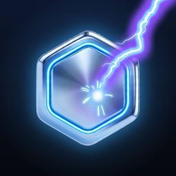

FUSEEvery tile has an arrow and a number. Tap one and its spark flies the way it points, as far as its number, setting off every tile it hits. Find the tile that takes the whole board down.
One new board a day, the same for everyone. Clear it in one tap for a perfect 100, then share your result without spoiling the answer.
Climb stage by stage as the boards grow bigger and trickier. Every tap costs a spark; clean clears earn some back. Run out and the climb is over, so every tap counts.
Ten big boards back to back against a clock that only counts your thinking time. Build combos, charge the perk, and chase the top of the rankings.
© 2026 Abdullah Saleh